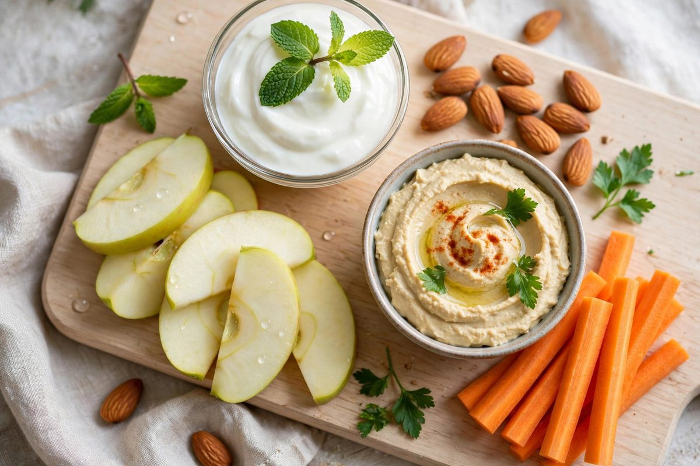

Healthy Snacking — Snacks That Help Instead of Hurt
How to snack without breaking your calorie target: protein and fibre choices, portioned snacks, and better habits.
Why snacking goes wrong
Snacking itself is not the problem. The problem is what, how much, and why we snack. A handful of nuts is about 180 calories, but eating from the bag while watching television can easily become three handfuls and 500 calories without noticing. Biscuits, crisps, and chocolate are designed to be easy to overeat: they are high in calories, low in fibre, and gone in minutes. Hunger is a real reason to snack, but boredom, stress, and habit are more common drivers. The first step is to notice which one is happening before you reach for food.
What makes a good snack
A good weight-loss snack combines protein or fibre with a reasonable portion, roughly 150 to 250 calories. Protein keeps you full, fibre slows digestion, and a defined portion stops mindless eating. Examples include Greek yoghurt with berries, an apple with a tablespoon of peanut butter, a boiled egg, carrot sticks with hummus, a small handful of nuts, or cottage cheese with cucumber. These snacks take time to eat, need chewing, and leave you satisfied for a couple of hours. A snack that is gone in thirty seconds and leaves you still hungry has not done its job.
Portioning and planning
Pre-portion snacks into small containers or bags instead of eating from a large packet. Keep healthy snacks visible and ready: cut vegetables, washed fruit, and yoghurt at the front of the fridge. Keep tempting snacks out of sight or out of the house if you know you cannot stop at one portion. Plan one or two snacks a day into your calorie target, so they are part of the plan rather than a failure of it. If you snack at the same time each day, such as mid-afternoon, make that a proper planned snack with protein, not a raid on the biscuit tin.
Drinks count as snacks
Sugary drinks are the easiest calories to cut. A large flavoured coffee can contain 300 calories or more, and a bottle of juice can contain as much sugar as a soft drink. Water, sparkling water, and unsweetened tea or coffee cost almost nothing in calories. If you want something sweet, eat fruit rather than drinking juice; the fibre in whole fruit slows sugar absorption and keeps you full. Alcohol also counts: it adds calories, lowers inhibitions around food, and disrupts sleep, which makes the next day harder.
Emotional and boredom eating
If you snack when you are stressed, bored, or tired, food is solving a problem it cannot fix. Pause and ask whether you are physically hungry: would an apple appeal, or only chocolate? If only chocolate appeals, it is probably a craving rather than hunger. Try a five-minute delay, a glass of water, a short walk, or a different activity first. If you still want the snack, have a portioned one and enjoy it. Keeping a short note of when you snack and how you felt can reveal patterns in a week, and patterns are easier to change than willpower.
Snacking at work and on the go
Work desks and cars are snack traps. Keep a small supply of portable snacks, such as fruit, nuts in single portions, or yoghurt, and keep the rest out of reach. Avoid the office biscuit tin by bringing your own afternoon snack. When travelling, pack food rather than relying on service stations. These are small preparations, but they remove the moment of decision when you are tired and hungry, which is exactly when willpower is weakest.
Frequently Asked Questions
Are nuts a good snack for weight loss?
Yes, in small portions. Nuts are filling and nutritious, but very calorie-dense, so a small handful of about 30 grams is the right portion. Pre-portion them rather than eating from the bag.
How many snacks a day is okay?
One or two planned snacks of 150 to 250 calories each fit most weight-loss plans. More than that usually means meals are too small or snacking has become a habit rather than hunger.
What is the best snack before bed?
A small protein snack, such as yoghurt or cottage cheese, is a good choice if you are genuinely hungry. Avoid large, sugary snacks late at night, which can disturb sleep.